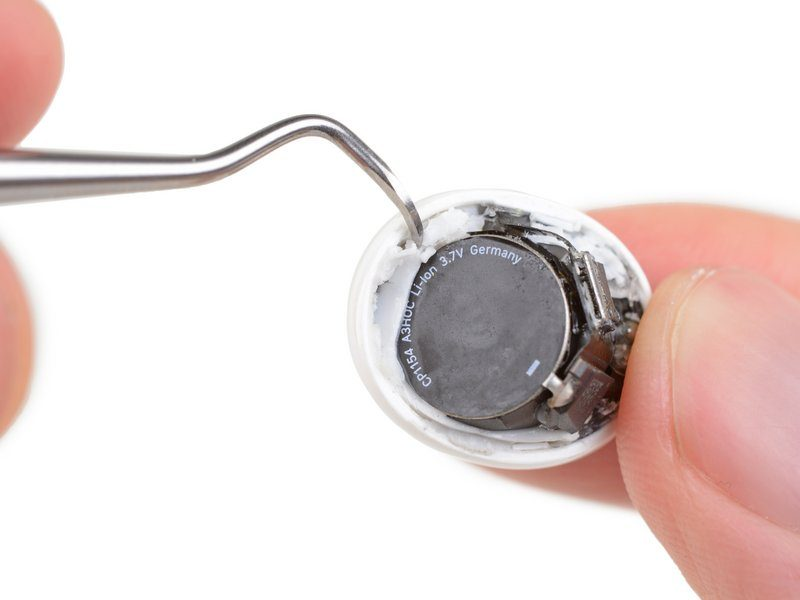
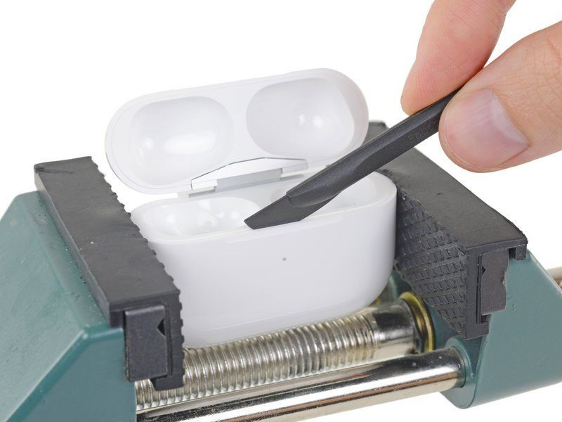

配图

iFixit：耳机内部的胶与纽扣电池

iFixit：用台钳撬开充电盒
图片版权归原作者所有，仅作个人学习收藏；出处见文末「来源与核实记录」。
结构原理
本节数字只写来源里给出的；来源没有就写「来源未给出」。
堆叠方案
方向：耳机：从耳侧到杆部
| 层级 | 零件 | 材料 | 厚度/尺寸 | 固定方式 | 依据 |
|---|---|---|---|---|---|
| L1 | 可拆硅胶耳塞 | 硅胶 | 来源未给出 | 卡扣式，咔哒一声装上 | Step 6 |
| L2 | 外壳（含网罩） | 塑料 | 来源未给出 | 胶粘 | Step 4、7 |
| L3 | 纽扣电池 | — | 来源未给出 | 被白色橡胶状胶包围，焊线连接 | Step 7-8 |
| L4 | 透明塑料支架 + 扬声器单元 + 内向麦克风 | — | 来源未给出 | 支架固定单元 | Step 9 |
| L5 | 排线（留余量）+ ZIF 小连接器 | — | 来源未给出 | 可拆连接 | Step 7 |
| L6 | SiP（H1 等）+ 同轴连接器 | — | 来源未给出 | — | Step 10 |
| L7 | 杆部：麦克风、天线、疑似力传感器 | — | 来源未给出 | 整体封装，需超声切割 | Step 11-12 |
剖面示意：
flowchart TB N0["硅胶耳塞(卡扣)"] N1["外壳+网罩"] N2["纽扣电池(胶包围+焊线)"] N3["支架+扬声器+内麦"] N4["排线+ZIF"] N5["SiP"] N6["杆部封装"] N0 --> N1 --> N2 --> N3 --> N4 --> N5 --> N6
零件清单
| 零件 | 数量 | 功能 | 材料 | 依据 |
|---|---|---|---|---|
| 耳塞 | 2 | 密封耳道，可换 | 硅胶 | Step 6 |
| 纽扣电池 | 每耳 1 | 供电 | — | Step 7 |
| 充电盒电池 | 2 芯，合计 1.98 Wh | 供电 | — | Step 15 |
| 胶粘剂 | — | 固定/封装 | 白色、橡胶状、耐酒精 | Step 8 |
装配顺序
- (按拆解顺序反推) 杆部组件整体封装
- SiP、排线（带余量）与 ZIF 连接
- 扬声器单元由透明支架固定
- 纽扣电池焊线连接后灌/涂胶
- 合壳胶粘，装耳塞
来源只给出（破坏性）拆解顺序，以上为反推。
受力与运动分析
- 受力路径：来源未讨论受力。
- 运动关系：无相对运动；耳塞为可拆卡扣件。
- 失效风险：电池会老化但无法更换；苹果表示 AirPods Pro 不可维修、只能更换（Step 16）。
设计要点与参数
| 要点 | 内容 | 依据 |
|---|---|---|
| 单耳重量 | 5.4 g | Step 1 |
| 充电盒重量 | 45.6 g | Step 1 |
| 充电盒电池 | 1.98 Wh（2 芯） | Step 15 |
| 防水 | IPX4 | Step 1 |
| 可维修评分 | 0/10 | Step 17 |
| 胶层厚度 | 来源未给出 | — |
优缺点
优点
- 极致紧凑，IPX4
- 耳塞卡扣可换；排线留余量 + ZIF 连接，内部局部有可拆考虑
缺点 / 代价
- 电池胶包+焊接，不可换
- 杆部无非破坏性入口
可借鉴点
- 对照学习：微型化产品至少给电池留可拆连接（如压接/连接器）
- 耳塞这类易耗件用卡扣可换，值得保留
相关案例
- GoPro Hero4 Session 免外壳防水机身
- 微软 Surface Laptop 超声波点焊与 Alcantara 覆面（反面案例）
- Framework 笔记本模块化扩展卡与磁吸边框
- 分类索引：拆解与可维修
来源与核实记录
- 主来源：AirPods Pro Teardown（2019-10-31，Jeff Suovanen / iFixit）
- 核实：2026-11-13 通过 iFixit API 读取 17 步原文，核对胶粘、电池、重量与评分。